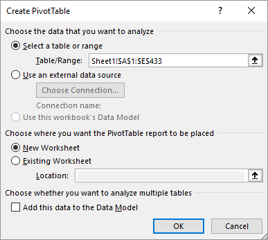
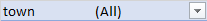
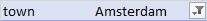
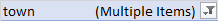
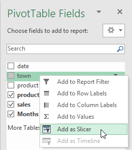
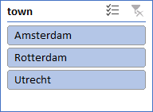
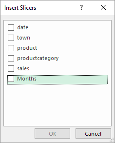
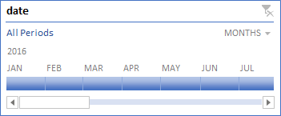

Filtering data in a PivotTables with report filters, slicers, and
timelines.
To filter data in a PivotTable, you can create a report filter with the task panel.
But when you filter on multiple items you can't easily see what items are selected
for filtering.
A more user-friendly way is using slicers. They contain a set of buttons with which
you can quickly filter the data in a PivotTable. Normally a slicer is created in a
PivotTable and is linked to this PivotTable. And only for filtering date fields, you
can also use timelines, which are similar to slicers. The use of slicers and
timelines you see often in so-called dashboards while they can be
linked to multiple PivotTables and charts.
This task uses the same practice file as Task: Creating PivotTables which contains the monthly sales
data in 2016 of some products, divided into three product categories: pvf (potatoes,
vegetables, and fruits), meat and dairy.
File:Supermarket.xlsx
Open the practice file.
Select any cell in the data area.
Choose tab Insert > PivotTable (group Tables).
The dialog box Create PivotTable appears. The range of
the table has already filled in.
Figure 1. Table range for supermarket sales

In this task, the PivotTable should appear in a new worksheet. So accept the
default location and click OK.
In the task panel drag field productcategory to the area
Columns and field sales to the
area Values. Then drag field date to
the area Rows.
Excel's automatic time grouping feature also adds the calculated field
Month to the Rows.No other
fields like quarters and years are added, because all dates are the last
monthly dates from one year.
Drag out field date from the Rows
area. Only field Months must remain.
Part report filters
Drag field town to the area
Filters.
The PivotTable report now displays a report filter: 
Click the drop-down arrow and select Amsterdam.
Only the data for Amsterdam is displayed and the filter indicates that
Amsterdam is selected. 
Click the drop-down arrow, check the box Select Multiple
items and then select Amsterdam and
Rotterdam.
The data for both towns is displayed. Unfortunately, the filter only
indicates that multiple items are selected, but not which items: 
To see which items you must open the drop-down list. For this scenario,
slicers are a better alternative.
Click the drop-down arrow and re-select the (All)
option.
Drag out field town from the area
Filters.
Part slicers
Right-click on field town in the PivotTable field list and
select Add as Slicer.
Figure 2. Adding slicer

And a slicer is created in the worksheet.
Figure 3. Slicer town

Experiment with the slicer by selecting an item. You can select multiple items
with the use of the Ctrl key or the button and clear the filter with the button
Another way to create slicers is through the menu. This way you can add
multiple slicers at once.
Click anywhere in the PivotTable report and choose tab Analyze > Insert Slicer (group Filter)
Insert Slicers dialog box

Select Months and click OK.
Through the ribbon Slicer Tools Options, you can format
a slicer such as change their look, settings, colors, ...
Filter the data with the slicers for the first three months of Utrecht.
Clear all filters. Select slicer Months and press the
Delete button on the keyboard.
Similar to a slicer is the timeline. With a timeline, you can filter records by date/time
fields.
Click anywhere in the PivotTable report and choose tab Analyze > Insert Timeline (group Filter)
The dialog box Insert Timelines is displayed with only field
date in it.
Select date and click OK.
Figure 4. Timeline months

Select some months to see the results.
Click on the period selector in the upper right corner and select
Quarters.